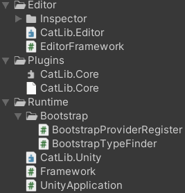
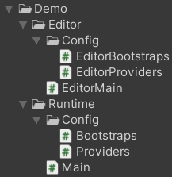
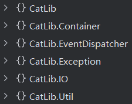

简述
CatLib本质上并非一个Unity框架，它是由这几个部分组成：
- CatLib.Core.dll(C#端)
- CatLib.Unity.asmdef/CatLib.Editor.asmdef(Unity端适配)
- 扩展(如ILRuntime)
浏览其Demo可发现确实是一个
分析
其内容相当简单，下图就是框架的全部：

官方例子
官方提供了一个例子，结构如下：

可以发现：
- 具有Runtime以及Editor部分
- 无论是Runtime/Editor，都具有相应的Bootstraps/Providers
先看Runtime：
可以看到核心就是Main.cs，具体如下：
/// <summary>
/// Main project entrance.
/// </summary>
[DisallowMultipleComponent]
public sealed class Main : Framework
{
protected override void OnStartCompleted(IApplication application, StartCompletedEventArgs args)
{
// Application entry, Your code starts writing here
// called this function after, use App.Make function to get service
// ex: App.Make<IYourService>().Debug("hello world");
Debug.Log("Hello CatLib, Debug Level: " + App.Make<DebugLevel>());
App.Watch<DebugLevel>(newLevel =>
{
Debug.Log("Change debug level: " + newLevel);
});
}
protected override IBootstrap[] GetBootstraps()
{
return Arr.Merge(base.GetBootstraps(), Bootstraps.GetBoostraps(this));
}
}
这里很清楚地看到，summary提到这里是项目主入口
该类中做的仅是override，实现了一些操作：
OnStartCompleted()：初始化完成后回调GetBootstraps()
Framework.cs是定义处：
[DisallowMultipleComponent]
[HelpURL("https://catlib.io/lasted")] // 已失效
public abstract class Framework : MonoBehaviour
{
public DebugLevel DebugLevel = DebugLevel.Production;
private Application application;
/// <summary>
/// Gets a value represents a application instance.
/// </summary>
public IApplication Application
{
get { return application; }
}
protected virtual void Awake()
{
DontDestroyOnLoad(gameObject);
App.That = application = CreateApplication(DebugLevel);
BeforeBootstrap(application);
application.Bootstrap(GetBootstraps());
}
protected virtual void Start()
{
application.Init();
}
/// <summary>
/// Create a new Application instance.
/// </summary>
protected virtual Application CreateApplication(DebugLevel debugLevel)
{
return new UnityApplication(this)
{
DebugLevel = debugLevel
};
}
/// <summary>
/// Trigged before booting.
/// </summary>
protected virtual void BeforeBootstrap(IApplication application)
{
application.GetDispatcher()?.AddListener(ApplicationEvents.OnStartCompleted, (sender, args) =>
{
OnStartCompleted((IApplication)sender, (StartCompletedEventArgs)args);
});
}
/// <summary>
/// Returns an array representing the bootstrap of the framework.
/// </summary>
protected virtual IBootstrap[] GetBootstraps()
{
return GetComponents<IBootstrap>();
}
/// <summary>
/// Trigged when the framework will destroy.
/// </summary>
protected virtual void OnDestroy()
{
application?.Terminate();
}
/// <summary>
/// Triggered when the framework is started
/// </summary>
protected abstract void OnStartCompleted(IApplication application, StartCompletedEventArgs args);
}
Framework提供了以下功能：
- Framework是一个MonoBehaviour脚本，具有可挂载功能
- 该MonoBehaviour是DontDestroy的
- application是该套框架的核心，这里创建的是一个
UnityApplication - UnityApplication需要提供自己的MonoBehaviour(其实就是反向注入)，并设置DebugLevel
- 具体内容被隐藏在框架内部(CatLib.Core.dll)了，从表象上来看：
按顺序 - application被设置到
App.That - Awake中进行Bootstrap操作
- Start中进行Init操作
- OnDestroy中进行Terminate操作
- application被设置到
以上看起来极其简单，但事实上是
框架
使用反编译可看到CatLib.Core.dll的结构：

真的是
App
App.That即可知晓
其声明如下：[ExcludeFromCodeCoverage] public abstract class App
汇总如下：
- That：核心，一个IApplication
- OnNewApplication事件：更换新IApplication时事件(当前有Application时添加会直接触发)
- IApplication封装：其它所有函数
由此可见，确切的来说：
Application
那么核心中的核心其实就是Application了，观察后发现，其实只有一种Application，即
其声明如下：public class UnityApplication : Application
要注意的是：UnityApplication是在Unity的CatLib.Unity中创建，即
我们首先需要关注的是
声明如下：public class Application : CatLib.Container.Container, IApplication, IContainerpublic class Container : IContainer
可以看到Application其实是继承于Container的
观察后，可以发现我们应该这么理解：
Container
Container继承了IContainer接口，内容很多，简单整理如下：
- 服务绑定
Bind()BindIf()Unbind()GetBind()HasBind() - 服务解析
Make()this[]CanMake()IsResolved()HasInstance() - 生命周期
Instance()Release()Flush()IsStatic() - 方法注入
BindMethod()UnbindMethod()Invoke()Call() - 服务标记
Tag()Tagged() - 别名系统
Alias()IsAlias() - 扩展事件
Extend()OnResolving()OnAfterResolving()OnRelease()OnRebound() - 类型处理
OnFindType()Type2Service() - 依赖添加
Needs()Given()需连写
由此我们可以得知：
绑定
作为DI，绑定是很重要的部分Bind()有2种形式：IBindData Bind(string service, Type concrete, bool isStatic);IBindData Bind(string service, Func<IContainer, object[], object> concrete, bool isStatic);
第二种是更通用的：
public IBindData Bind(string service, Func<IContainer, object[], object> concrete, bool isStatic)
{
// 防御代码
Guard.ParameterNotNull((object) service, nameof (service));
Guard.ParameterNotNull((object) concrete, nameof (concrete));
this.GuardServiceName(service);
this.GuardFlushing();
// service检测
service = this.FormatService(service);
if (this.bindings.ContainsKey(service))
throw new LogicException($"Bind [{service}] already exists.");
if (this.instances.ContainsKey(service))
throw new LogicException($"Instances [{service}] is already exists.");
if (this.aliases.ContainsKey(service))
throw new LogicException($"Aliase [{service}] is already exists.");
// 绑定
BindData bindData = new BindData(this, service, concrete, isStatic);
this.bindings.Add(service, bindData); // 由于上方已检测，所以可以安心添加
// 根据是否已解析决定是否特殊处理
if (!this.IsResolved(service))
return (IBindData) bindData;
if (isStatic)
this.Make(service, Array.Empty<object>());
else
this.TriggerOnRebound(service);
return (IBindData) bindData;
}
ParameterNotNull()就是用于保证传参的正确性的，同时GuardServiceName()/GuardFlushing()也是一些防御代码
真正关键的是这一句：BindData bindData = new BindData(this, service, concrete, isStatic);IsResolved()的情况进行了特殊处理
其声明如下：public sealed class BindData : Bindable<IBindData>, IBindData, IBindable<IBindData>, IBindable
那么其实本质就是IBindData/IBindable
- Service：服务名(注入)
- Container：就是Container自身，即this(注入)
- Unbind()
除此以外还有一些internal函数，是
- AddContextual()
- GetContextual()
- GetContextualClosure()
接口IBindData是BindData扩展的内容，有：
- Concrete事件/IsStatic
- Alias()/Tag()/OnResolving()/OnAfterResolving()/OnRelease()
Concrete如下所示：public Func<IContainer, object[], object> Concrete { get; }
仅有get方法，这意味着仅能通过构造函数传入
由其名字与返回值可知：
与Concrete类似的有IsStatic，同通过构造函数传入
其余函数我们
要注意的是：
Bindata使用的是Bindable<IBindData>，即类似与Singleton的反向引用
在类中，IBindData泛型被称为TReturn，也就是IBindable<TReturn>提供了唯一函数：Needs()
private GivenData<TReturn> given;
public IGivenData<TReturn> Needs(string service)
{
Guard.ParameterNotNull((object) service, nameof (service));
this.AssertDestroyed();
if (this.given == null)
this.given = new GivenData<TReturn>((CatLib.Container.Container) this.Container, this);
this.given.Needs(service);
return (IGivenData<TReturn>) this.given;
}
public IGivenData<TReturn> Needs<TService>()
{
return this.Needs(this.Container.Type2Service(typeof (TService)));
}
那么本质就是通过given.Needs()来获取given(更新了)
如果given还没有，则会创建一个internal sealed class GivenData<TReturn> : IGivenData<TReturn> where TReturn : class, IBindable<TReturn>
作为IGivenData，唯一功能为Given()
GivenData的构造传入了container以及bindable，会在函数中用到Given()如下所示：
public TReturn Given(string service)
{
Guard.ParameterNotNull((object) service, nameof (service));
this.bindable.AddContextual(this.needs, service);
return this.bindable as TReturn;
}
public TReturn Given<TService>() => this.Given(this.container.Type2Service(typeof (TService)));
public TReturn Given(Func<object> closure)
{
Guard.Requires<ArgumentNullException>(closure != null);
this.bindable.AddContextual(this.needs, closure);
return this.bindable as TReturn;
}
needs是通过Needs()设置，后续调用Given()则会通过bindable.AddContextual()将key-needs(service)/value-given(service)添加进contextual或contextualClosure字典中
将上述几者联系一下，即可了解到：
Bindable.AddContextual()接收的needs与given其实都是service，也就是DI中对应的接口与接口实现GivenData<TReturn>.Needs()设置了所需服务(接口)，Bindable<TReturn>对其进行了包装GivenData<TReturn>.Given()设置了获取的服务(实例)Given()具有2种形式，一种是string，一种是Func<object>，即服务名或闭包形式直接获取服务，这与Bindable.contextual/Bindable.contextualClosure两字典对应
就这么来看，BindData的创建并未收集到太多信息，收集到的信息核心就只是Needs()的service，同时，前面提到的Given()此时还未调用
解析Bind()之后只是获取了BindData，此时实例并未创建，解析才是创建的地方
所对应的函数为Make()：
public object Make(string service, params object[] userParams)
{
this.GuardConstruct(nameof (Make));
return this.Resolve(service, userParams);
}
protected object Resolve(string service, params object[] userParams)
{
Guard.ParameterNotNull((object) service, nameof (service));
service = this.AliasToService(service); // 服务名更名
object obj1;
// 缓存检测
if (this.instances.TryGetValue(service, out obj1))
return obj1;
// 循环依赖检测
if (this.BuildStack.Contains(service))
throw this.MakeCircularDependencyException(service);
this.BuildStack.Push(service);
this.UserParamsStack.Push(userParams);
try
{
// 创建操作
BindData bindFillable = this.GetBindFillable(service);
object instance1 = this.Build(bindFillable, userParams);
object instance2 = this.Extend(service, instance1);
object obj2 = bindFillable.IsStatic ? this.Instance(bindFillable.Service, instance2) : this.TriggerOnResolving(bindFillable, instance2);
this.resolved.Add(bindFillable.Service);
return obj2;
}
finally
{
this.UserParamsStack.Pop();
this.BuildStack.Pop();
}
}
可以看到Make()本质上是Resolve()，可以看到核心必然是Build()/Extend()
先看Build()：
protected virtual object Build(BindData makeServiceBindData, object[] userParams)
{
object instance = makeServiceBindData.Concrete != null ? makeServiceBindData.Concrete((IContainer) this, userParams) : this.CreateInstance((Bindable) makeServiceBindData, this.SpeculatedServiceType(makeServiceBindData.Service), userParams);
return this.Inject((Bindable) makeServiceBindData, instance);
}
private object Inject(Bindable bindable, object instance)
{
this.GuardResolveInstance(instance, bindable.Service);
this.AttributeInject(bindable, instance);
return instance;
}
可以看到：
instance的创建有2种方式：
如果有Concrete，则使用该事件创建
如this索引器中有：
set { this.GetBind(service)?.Unbind(); this.Bind(service, (Func<IContainer, object[], object>) ((container, args) => value), false); }可以看出这是一种
直接的创建 ，set传入的value即实例
可能的形式有：container["my.service"] = new MyService();如果没有Concrete，则会通过这种方式创建：
this.CreateInstance((Bindable) makeServiceBindData, this.SpeculatedServiceType(makeServiceBindData.Service), userParams)
protected virtual object CreateInstance( Bindable makeServiceBindData, Type makeServiceType, object[] userParams) { if (this.IsUnableType(makeServiceType)) return (object) null; userParams = this.GetConstructorsInjectParams(makeServiceBindData, makeServiceType, userParams); try { return this.CreateInstance(makeServiceType, userParams); } catch (System.Exception ex) { throw this.MakeBuildFaildException(makeServiceBindData.Service, makeServiceType, ex); } }第一件事是判断类型可用性：
this.IsUnableType(makeServiceType)
对于abstract/interface/array/enum/可空类型/null是不可用的
对于其它一般的类型都是可用的
由于类型是用string表示的，所以需要通过SpeculatedServiceType()进行获取，这主要是通过findType(SortSet<Func<string, Type>, int>，大致是一种具有优先级的string转Type的事件)
findType的添加是通过Container.OnFindType()完成的，对于Application.cs来说，有默认实现：this.OnFindType((Func<string, Type>) (finder => Type.GetType(finder)), int.MaxValue);
同时App.cs也提供了OnFindType()的包装
所以说转换其实很方便，简单来说就是调用了 Type.GetType()进行了转换第二件事是获取构造函数参数列表：
this.GetConstructorsInjectParams(makeServiceBindData, makeServiceType, userParams);
这里比较复杂，首先会做的是遍历所有构造函数，进行this.GetDependencies(makeServiceBindData, constructorInfo.GetParameters(), userParams);操作，该函数非常复杂，简单来说就是通过解析获取到了该构造函数需要的实例参数 最后非常简单，就是创建实例：
this.CreateInstance(makeServiceType, userParams)
本质上就是在调用Activator.CreateInstance()
显然，核心在于GetDependencies()，这里会非常复杂，因为一个类会有多种构造函数，同时参数有可能是基础类型，也有可能是某接口，那么创建起来必然是非常复杂的
instance创建完成后还需进行
Inject()操作，本质上就是进行了AttributeInject()操作，这与[Inject]特性有关，对于具有[Inject]特性且符合要求的属性可被注入，对于可注入内容，会进行：property.SetValue(makeServiceInstance, instance, (object[]) null)即赋值操作Tip：instance创建与 [Inject]并不冲突，构造函数可以传统注入一些，而属性注入可以注入另一些
再看Extend()：
private object Extend(string service, object instance)
{
List<Func<object, IContainer, object>> funcList;
if (this.extenders.TryGetValue(service, out funcList))
{
foreach (Func<object, IContainer, object> func in funcList)
instance = func(instance, (IContainer) this);
}
if (!this.extenders.TryGetValue(string.Empty, out funcList))
return instance;
foreach (Func<object, IContainer, object> func in funcList)
instance = func(instance, (IContainer) this);
return instance;
}
可以看到这是一个
extenders的添加在Extend()的另一个public声明中完成：
public void Extend(string service, Func<object, IContainer, object> closure)
{
Guard.Requires<ArgumentNullException>(closure != null);
this.GuardFlushing();
service = string.IsNullOrEmpty(service) ? string.Empty : this.AliasToService(service);
object obj;
// 如果服务已经有实例，立即应用扩展
if (!string.IsNullOrEmpty(service) && this.instances.TryGetValue(service, out obj))
{
object key = obj;
this.instances[service] = obj = closure(obj, (IContainer) this);
if (!key.Equals(obj))
{
this.instancesReverse.Remove(key);
this.instancesReverse.Add(obj, service);
}
this.TriggerOnRebound(service, obj);
}
else
{
// 否则保存扩展器，待后续解析时应用
List<Func<object, IContainer, object>> funcList;
if (!this.extenders.TryGetValue(service, out funcList))
this.extenders[service] = funcList = new List<Func<object, IContainer, object>>();
funcList.Add(closure);
if (string.IsNullOrEmpty(service) || !this.IsResolved(service))
return;
this.TriggerOnRebound(service); // 重绑定机制
}
}
可以看到：其实extenders是用于解析时的，如果实例已创建则根本无需extenders的，但同时需要更改一下instancesReverse的对象
但这里更重要的是TriggerOnRebound()，即
private void TriggerOnRebound(string service, object instance = null)
{
IList<Action<object>> reboundCallbacks = this.GetOnReboundCallbacks(service);
if (reboundCallbacks == null || reboundCallbacks.Count <= 0)
return;
IBindData bind = this.GetBind(service);
instance = instance ?? this.Make(service, Array.Empty<object>());
for (int index = 0; index < reboundCallbacks.Count; ++index)
{
reboundCallbacks[index](instance);
// 对非单例进行重创建实例操作(避免污染)
if (index + 1 < reboundCallbacks.Count && (bind == null || !bind.IsStatic))
instance = this.Make(service, Array.Empty<object>());
}
}
简单来说就是
rebound注册则是通过OnRebound()完成
最终创建则是通过以下这句收尾：object obj2 = bindFillable.IsStatic ? this.Instance(bindFillable.Service, instance2) : this.TriggerOnResolving(bindFillable, instance2);
也就是说对于IsStatic，具有2种形式：
- IsStatic：单例服务，具有缓存
Instance() - !IsStatic：瞬态服务，每次都会创建新的
TriggerOnResolving() - 而
是否是Static的则在 Bind()时决定
Resolve()中的BuildStack/UserParamsStack的作用是什么Resolve()是会发生递归的，不考虑代码，仅考虑何时发生，那么在服务A需要服务B时必然会先进行服务B的解析，即2次Resolve()
那么BuildStack会在Resolve()的开始进行检查，防止发生A->B->A这种循环依赖情况
但UserParamsStack好像没有用到
总之：Make()则会真正获取到service实例
绑定与解析可以说是DI的核心，其余还存在一些特性：
Call()是一种方法调用方式，考虑在这种服务注入形式的框架下，方法同样可能需要注入接口(因为并没有被注入类，所以获取不到)，那么调用起来是比较麻烦的，该函数补充了这一点：
public object Call(object target, MethodInfo methodInfo, params object[] userParams)
{
Guard.Requires<ArgumentNullException>(methodInfo != (MethodInfo) null);
if (!methodInfo.IsStatic)
Guard.Requires<ArgumentNullException>(target != null);
this.GuardConstruct(nameof (Call));
ParameterInfo[] parameters = methodInfo.GetParameters();
userParams = this.GetDependencies((Bindable) this.GetBindFillable(target != null ? this.Type2Service(target.GetType()) : (string) null), parameters, userParams) ?? Array.Empty<object>();
return methodInfo.Invoke(target, userParams);
}
该函数没有什么特别的，只是针对接口使用GetDependencies()进行了获取而已
相比Call()的一次性调用，BindMethod()+Invoke()是一种更持久的注册
相对的，这里的处理会更加麻烦：
public IMethodBind BindMethod(string method, object target, MethodInfo called)
{
this.GuardFlushing();
this.GuardMethodName(method);
return this.methodContainer.Bind(method, target, called);
}
public object Invoke(string method, params object[] userParams)
{
this.GuardConstruct(nameof (Invoke));
return this.methodContainer.Invoke(method, userParams);
}
相比Container来说，MethodContainer简单许多
MethodContainer的核心其实就是上述函数中的实现Bind()/Invoke()：
public IMethodBind Bind(string method, object target, MethodInfo methodInfo)
{
Guard.ParameterNotNull((object) method, nameof (method));
Guard.ParameterNotNull((object) methodInfo, nameof (methodInfo));
if (!methodInfo.IsStatic)
Guard.Requires<ArgumentNullException>(target != null);
if (this.methodMappings.ContainsKey(method))
throw new LogicException($"Method [{method}] is already Bind");
MethodBind methodBind = new MethodBind(this, this.container, method, target, methodInfo);
this.methodMappings[method] = methodBind;
if (target == null)
return (IMethodBind) methodBind;
List<string> stringList;
if (!this.targetToMethodsMappings.TryGetValue(target, out stringList))
this.targetToMethodsMappings[target] = stringList = new List<string>();
stringList.Add(method);
return (IMethodBind) methodBind;
}
public object Invoke(string method, params object[] userParams)
{
Guard.ParameterNotNull((object) method, nameof (method));
MethodBind makeServiceBindData;
if (!this.methodMappings.TryGetValue(method, out makeServiceBindData))
throw MethodContainer.MakeMethodNotFoundException(method);
object[] parameters = this.container.GetDependencies((Bindable) makeServiceBindData, makeServiceBindData.ParameterInfos, userParams) ?? Array.Empty<object>();
return makeServiceBindData.MethodInfo.Invoke(makeServiceBindData.Target, parameters);
}
可以看到，与Container类似，在MethodContainer中的Bind()会创建出internal sealed class MethodBind : Bindable<IMethodBind>, IMethodBind, IBindable<IMethodBind>, IBindable
两者同为Bindable，但具有IMethodBind特性而非IBindData，而该接口仅为一个接口：public interface IMethodBind : IBindable<IMethodBind>, IBindable {}Bind()创建了MethodBind，在Invoke()中则会取出并通过Container.GetDependencies()获取所有参数进行方法(MethodInfo)真正的Invoke()
Tag()/Tagged可以说是一组便捷工具，
public void Tag(string tag, params string[] services)
{
Guard.ParameterNotNull((object) tag, nameof (tag));
this.GuardFlushing();
List<string> stringList;
if (!this.tags.TryGetValue(tag, out stringList))
this.tags[tag] = stringList = new List<string>();
foreach (string str in services ?? Array.Empty<string>())
{
if (!string.IsNullOrEmpty(str))
stringList.Add(str);
}
}
public object[] Tagged(string tag)
{
Guard.ParameterNotNull((object) tag, nameof (tag));
List<string> source;
if (!this.tags.TryGetValue(tag, out source))
throw new LogicException($"Tag \"{tag}\" is not exist.");
return Arr.Map<string, object>((IEnumerable<string>) source, (Func<string, object>) (service => this.Make(service, Array.Empty<object>())));
}
可以看到其中具有一个特性：Tagged()获取到的内容并非string，而是由Make()生成的service实例
Alias()是一种AliasToService()的用法：
private string AliasToService(string name)
{
name = this.FormatService(name);
string str;
return !this.aliases.TryGetValue(name, out str) ? name : str;
}
本质上就是
而别名的添加则就是通过Alias()完成：
public IContainer Alias(string alias, string service)
{
Guard.ParameterNotNull((object) alias, nameof (alias));
Guard.ParameterNotNull((object) service, nameof (service));
if (alias == service)
throw new LogicException($"Alias is same as service: \"{alias}\".");
this.GuardFlushing();
alias = this.FormatService(alias);
service = this.AliasToService(service);
if (this.aliases.ContainsKey(alias))
throw new LogicException($"Alias \"{alias}\" is already exists.");
if (this.bindings.ContainsKey(alias))
throw new LogicException($"Alias \"{alias}\" has been used for service name.");
if (!this.bindings.ContainsKey(service) && !this.instances.ContainsKey(service))
throw new LogicException("You must Bind() or Instance() serivce before and you be able to called Alias().");
this.aliases.Add(alias, service);
List<string> stringList;
if (!this.aliasesReverse.TryGetValue(service, out stringList))
this.aliasesReverse[service] = stringList = new List<string>();
stringList.Add(alias);
return (IContainer) this;
}
在前面提到过Extend()/OnRebound()/OnFindType()几种扩展，其实还有一些扩展：
Extend()：包装服务OnFindType()：类型转换扩展OnRebound()：重绑回调OnResolving()：解析完成回调OnAfterResolving()：解析完成回调OnRelease()：释放回调
Container总结
以上为Container的全部，但总的来说，其实非常简单：Bind()用于绑定，Make()用于解析，其余基本都是扩展
Application流程
回到Application.cs：
回看其声明：public class Application : CatLib.Container.Container, IApplication, IContainer
我们其实能够明白：
与其说是继承，不如说其实本来就只是一个Application的功能
IApplication接口才是真正提供的功能：
public interface IApplication : IContainer
{
bool IsMainThread { get; }
DebugLevel DebugLevel { get; set; }
IEventDispatcher GetDispatcher();
void Register(IServiceProvider provider, bool force = false);
bool IsRegistered(IServiceProvider provider);
long GetRuntimeId();
void Terminate();
}
这些内容算是非常熟悉的，毕竟这是在Unity层中所需要调用的内容
但同时也存在一些重要函数直接定义在Application中，考虑Framework中的流程：
在Awake阶段执行了Bootstrap系列操作：
首先是BeforeBootstrap()：本质上这是在调用application.GetDispatcher()?.AddListener()进行回调的添加，所谓的dispatcher即
更重要的是application.Bootstrap(GetBootstraps())：
protected virtual IBootstrap[] GetBootstraps()
{
return GetComponents<IBootstrap>();
}
由GetBootstraps()我们可以确认：
public virtual void Bootstrap(params IBootstrap[] bootstraps)
{
Guard.Requires<ArgumentNullException>(bootstraps != null);
this.Process = !this.bootstrapped && this.Process == StartProcess.Construct ? StartProcess.Bootstrap : throw new LogicException("Cannot repeatedly trigger the Bootstrap()");
bootstraps = this.Raise<BeforeBootEventArgs>(new BeforeBootEventArgs(bootstraps, (IApplication) this)).GetBootstraps();
this.Process = StartProcess.Bootstrapping;
HashSet<IBootstrap> bootstrapSet = new HashSet<IBootstrap>();
foreach (IBootstrap bootstrap in bootstraps)
{
if (bootstrap != null)
{
if (bootstrapSet.Contains(bootstrap))
throw new LogicException($"The bootstrap already exists : {bootstrap}");
bootstrapSet.Add(bootstrap);
if (!this.Raise<BootingEventArgs>(new BootingEventArgs(bootstrap, (IApplication) this)).IsSkip)
bootstrap.Bootstrap();
}
}
this.Process = StartProcess.Bootstraped;
this.bootstrapped = true;
this.Raise<AfterBootEventArgs>(new AfterBootEventArgs((IApplication) this));
}
Bootstrap()是bootstrap即
核心一句自然是bootstrap.Bootstrap()，也就是说需要
IBootstrap接口非常简单：public interface IBootstrap{void Bootstrap();}
接口仅需要一个Bootstrap()操作，也就意味着：Bootstrap()是Awake时的一个流程，我们需要自行实现若干个IBootstrap以完成Awake流程，具体做什么都是可行的(但DI创建是最关键的)
在Start阶段执行了Init操作：
public virtual void Init()
{
if (!this.bootstrapped)
throw new LogicException("You must call Bootstrap() first.");
this.Process = !this.inited && this.Process == StartProcess.Bootstraped ? StartProcess.Init : throw new LogicException("Cannot repeatedly trigger the Init()");
this.Raise<BeforeInitEventArgs>(new BeforeInitEventArgs((IApplication) this));
this.Process = StartProcess.Initing;
foreach (IServiceProvider loadedProvider in (IEnumerable<IServiceProvider>) this.loadedProviders)
this.InitProvider(loadedProvider);
this.inited = true;
this.Process = StartProcess.Inited;
this.Raise<AfterInitEventArgs>(new AfterInitEventArgs((IApplication) this));
this.Process = StartProcess.Running;
this.Raise<StartCompletedEventArgs>(new StartCompletedEventArgs((IApplication) this));
}
可以看到除开事件回调，操作为InitProvider()，而provider来自于Register()：
public virtual void Register(IServiceProvider provider, bool force = false)
{
Guard.Requires<ArgumentNullException>(provider != null, "Parameter \"provider\" can not be null.");
if (this.IsRegistered(provider))
{
if (!force)
throw new LogicException($"Provider [{provider.GetType()}] is already register.");
this.loadedProviders.Remove(provider);
}
if (this.Process == StartProcess.Initing)
throw new LogicException("Unable to add service provider during Initing");
if (this.Process > StartProcess.Running)
throw new LogicException("Unable to Terminate in-process registration service provider");
if (provider is ServiceProvider serviceProvider)
serviceProvider.SetApplication((IApplication) this);
if (this.Raise<RegisterProviderEventArgs>(new RegisterProviderEventArgs(provider, (IApplication) this)).IsSkip)
return;
try
{
this.registering = true;
provider.Register();
}
finally
{
this.registering = false;
}
this.loadedProviders.Add(provider);
if (!this.inited)
return;
this.InitProvider(provider);
}
Register()需要IServiceProvider，这显然是
public interface IServiceProvider
{
void Init();
void Register();
}
结合Register()来看，首先IServiceProvider具有一层抽象封装SetApplication()：internal void SetApplication(IApplication application) => this.App = application;
简单来说就是
provider首先会进行Register()操作，然后进行Init()操作，两者都是在application.Register()中完成的
结合application.Init()与application.Register()可以了解到：application.Register()会先进行，会执行provider.Register()与provdier.Init()生成provider，此时有2种情况：
- !this.inited：即未执行
application.Init()初始化，此时先返回，等待Init操作完成所有provider的Init() - this.inited：即已执行
application.Init()初始化，此时则直接Register()/Init()一并完成
所以说可以了解到，实际上应该是这样运作的：Register()可以进行provider的注册，结合上Bootstrap，应该通过一个具有IBootstrap接口的MonoBehaviour实现Register()注册，那么Start时Init()则会按流程完成操作
在OnDestroy阶段执行了Terminate操作：
public virtual void Terminate()
{
this.Process = StartProcess.Terminate;
this.Raise<BeforeTerminateEventArgs>(new BeforeTerminateEventArgs((IApplication) this));
this.Process = StartProcess.Terminating;
this.Flush();
if (App.That == this)
App.That = (IApplication) null;
this.Process = StartProcess.Terminated;
this.Raise<AfterTerminateEventArgs>(new AfterTerminateEventArgs((IApplication) this));
}
public virtual void Flush()
{
try
{
this.flushing = true;
foreach (object mixed in this.instanceTiming.GetIterator(false))
this.Release(mixed);
Guard.Requires<AssertException>(this.instances.Count <= 0);
this.tags.Clear();
this.aliases.Clear();
this.aliasesReverse.Clear();
this.instances.Clear();
this.bindings.Clear();
this.resolving.Clear();
this.release.Clear();
this.extenders.Clear();
this.resolved.Clear();
this.findType.Clear();
this.findTypeCache.Clear();
this.BuildStack.Clear();
this.UserParamsStack.Clear();
this.rebound.Clear();
this.methodContainer.Flush();
this.instanceTiming.Clear();
this.instanceId = 0;
}
finally
{
this.flushing = false;
}
}
可以看到本质上就是Flush()，即
但是可以注意到其中有一个不同，就是对instanceTiming的操作Release()：
public bool Release(object mixed)
{
if (mixed == null)
return false;
object obj = (object) null;
string str;
if (!(mixed is string))
{
str = this.GetServiceWithInstanceObject(mixed);
}
else
{
str = this.AliasToService(mixed.ToString());
if (!this.instances.TryGetValue(str, out obj))
str = this.GetServiceWithInstanceObject(mixed);
}
if (obj == null && (string.IsNullOrEmpty(str) || !this.instances.TryGetValue(str, out obj)))
return false;
BindData bindFillable = this.GetBindFillable(str);
bindFillable.TriggerRelease(obj);
this.TriggerOnRelease((IBindData) bindFillable, obj);
if (obj != null)
{
this.DisposeInstance(obj);
this.instancesReverse.Remove(obj);
}
this.instances.Remove(str);
if (!this.HasOnReboundCallbacks(str))
this.instanceTiming.Remove(str);
return true;
}
简单理解的话Dispose()
以上可以说是框架的全部，除了提到的函数，基本上所有的函数都在Application.cs/Container.cs/ContainerExtension.cs中定义